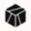

Midgard / Cardano Optimistic Rollup L2
An open-source, community-visible development tracker for
anastasia-Labs/midgard tx-validation
— the first permissionless optimistic rollup on Cardano, built by
Anastasia Labs.
Updated automatically from GitHub.
Last refreshed —
What is Midgard?
A plain-English intro for anyone new to Cardano scaling.
Midgard is a Layer 2 for Cardano — think of it as a fast express lane that sits on top of the main Cardano blockchain. Transactions happen on Midgard quickly and cheaply, and Cardano (Layer 1) acts as the trusted settlement court underneath. It's an optimistic rollup, meaning transactions are assumed valid by default and anyone can challenge a bad one with a fraud proof — no central operator gets to decide.
Permissionless & trustless
No central sequencer, no multisig, no custodians. Anyone can run a Midgard operator, and a single honest participant can keep the network safe through fraud proofs.
Fast & cheap
By batching activity off-chain and posting compact commitments to Cardano, Midgard targets transaction costs below one cent with near-instant confirmation in your wallet.
Familiar for builders
Midgard preserves Cardano's EUTxO model, so dApps built with Aiken or Plutus can move over without being rewritten for a new execution environment.
Promised milestones
Sources: Project Catalyst F12 (₳500,000) + Cardano Governance Action gov_action13tfag48… (₳2,162,096 treasury withdrawal). Combined committed funding: ₳2,662,096.
Work area allocation
FTE allocation from the Midgard Project Scope document.
- Onchain code4 FTE
- Offchain code2 FTE
- DA Layer1 FTE
- Midgard Node0 FTE
- Tx Builder1 FTE
- Testnet Deployment0 FTE
- Total secured8 FTE
Tech stack
From the repository language composition.
- Loading…
Ecosystem
Projects publicly building with or on Midgard. Because Midgard is isomorphic to Cardano L1, any existing Cardano dApp can in principle redeploy unchanged — this list tracks confirmed collaborations.
Sundial
The first UTXO-native Layer 2 for institutional Bitcoin DeFi — secure, compliant BTC yield generation. Architected in collaboration with Anastasia Labs and Midgard.

BitcoinOS
Smart contract layer for Bitcoin. Partnered on the Catalyst F13 "Institutional-Grade Layer-2 for Bitcoin DeFi on Cardano" proposal targeting Midgard.
Tesseract
Co-signatory on the F13 institutional-grade Bitcoin DeFi L2 proposal alongside Anastasia Labs.
Fairway
Institutional identity layer paired with Sundial in the F15 "Sundial + Fairway: Institutional Identity for Bitcoin DeFi" Catalyst proposal.
Your project here?
Midgard preserves Cardano's EUTxO model, so dApps built with Aiken or Plutus can redeploy on the rollup without rewriting their contracts.
Releases
Tagged releases on the upstream repo. Empty until Anastasia Labs starts cutting versioned releases.
- Loading…
Recent commits
Latest 15 commits on the default branch.
- Loading…
Open pull requests
- Loading…
Recent issues
- Loading…
Videos
Talks and explainers about Midgard.


Resources
Source code →
anastasia-Labs/midgard · tx-validation branch
Governance action →
Cardano gov action for Midgard funding (₳2.16M)
Project Catalyst F12 →
Original 500,000 ADA proposal & milestones
Project Scope (PDF) →
Anastasia Labs Midgard scope document on IPFS
Technical specification →
Live LaTeX-rendered protocol spec (built via make spec)
Anastasia Labs →
The team building Midgard
Midgard on X →
@midgardprotocol — official protocol account
Anastasia Labs on X →
@anastasialabs — team updates